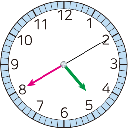

- 개념 정리
- 1
- 2
- 3
- 4
- 5
- 6
-
-
초바늘이 작은 눈금 한 칸을 가는 동안 걸리는 시간을라고 합니다.1 초
-
초바늘이 시계를 한 바퀴 도는 데 걸리는 시간은입니다.60 초
-
-
1 시각을 읽어 보세요.
시4분40초10시8분5초20 -
2 시각에 맞게 오른쪽 시계에 초바늘을 그려 넣으세요.
03:35:50 -
3 안에 알맞은 수를 써넣으세요.
1분 40초＝초1005분＝초300250초＝분4초10135초＝분2초15 -
4 즉석 밥을 전자레인지에 데워야 하는 시간은 몇 초일까요?
즉석 밥을 전자레인지에
2분 동안 데워야 해요.120초 -
5 안에 알맞은 단위를 찾아 써넣으세요.
초분시간-
비행기를 타고 김포 공항에서 제주도까지 가는 데 걸리는 시간은 1입니다.시간
-
전기 주전자로 물을 끓이는 데 걸리는 시간은 3입니다.분
-
박수 한 번 치는 시간은 1입니다.초
-
-
6 시간이 긴 것부터 차례대로 기호를 써 보세요.
ㄱ72 mmㄴ5 cm 9 mmㄷ6 cm,ㄷ,ㄴㄱ